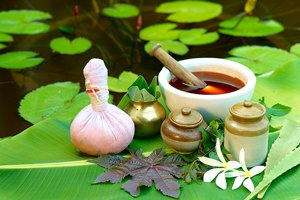

MAGIC OF AYURVEDA
'Ayurveda’ is generally understood as ‘Science of life’ translating ‘Ayuh (r)’as life and ‘Veda’ as science. Ayurveda is an ancient system of life and also the oldest surviving medical system in the world. Dating back almost 5000 years, it is also considered to be an ancient science of healing that enhances longevity. It has evolved from the quest to have a happy life, through a deep understanding of creation and its maintenance, perceived and conceived by the rishis or seers of ancient India. Ayurveda emphasizes upon life in general with bit more emphasis on human life.
Ayurveda is also known as the science of living a healthy and illness free life. It is built on the premise that in olden days, man used to live close to nature and whenever he got exposed to some disease, he used to cure himself using resources and material provided by the Mother Nature. It therefore would not be wrong to say that Ayurveda charts out a health patter based on nature and its natural resources.
Modern science supports the proposition that five Tanmatra are the progenitors of their visible counterparts by describing basic formative particles (electron, proton and neutron- which could be the tanmatras) combining in different proportions and forming atoms, elements and compounds.
Ayurveda says Sarvam dravyam hi panchabhauticam or every substance in the universe is composed of five basic elements only. This further shows a conceptual similarity between modern science and Ayurveda with reference to the idea of substance generation.
| Mahabhuta | Physical attributes | Modality of perception | Organ of perception |
|---|---|---|---|
| Akasha | State of void | Shabda (Hearing) | Ear |
| Vayu | State of gas | Sparsha (Touch) | Skin |
| Agni | State of energy | Rupa (Vision) | Eye |
| Jala | State of liquid | Rasa (Taste) | Tongue |
| Prithvi | State of solid | Gandha (Smell) | Nose |
In recent years, scientists have studied herbs like Turmeric and Ashwagandharishta for their medicinal properties suggested in the ancient texts. Ashwagandharishta is primarily known for applications in neurological disorders such as depression, epilepsy, and anxiety. Bhondave et al. (2014), studied if Ashwagandharishta could help protect rat livers against CCl4 induced toxicity. With the the StepOneTM real-time qPCR system and the TaqManTM gene expression assays and master mixes, the team observed upregulation of antioxidant enzymes, such as catalase (CAT) and glutathione peroxidase (GPx), and downregulation of IL-6, a pro-inflammatory cytokine. Their results show a possible mechanism of how Ashwagandharishta may provide hepatoprotection by preventing oxidative damage.
Turmeric (or Curcumin) has also been extensively studied for its anti-inflammatory properties. McCann et al. (2014) highlight the in vitro effects of turmeric extract against two gene variants associated with inflammatory bowel disease (IBD) in HEK293 cells. Their results suggest that Turmeric, may beneficially affect two gene variants linked to IBD severity. Klawitter et al. (2012) studied if Turmeric may have an anti-inflammatory and anti-catabolic activity in inflammation related to Discogenic back pain. Their RT-qPCR data suggest downregulation of proinflammatory cytokines. Although Turmeric shows anti-inflammatory properties in vitro, further in vivo and clinical studies are required to fully understand and validate the effects of Turmeric as alternative treatment for people suffering from IBD or Discogenic back pain.
To this day, we try to understand the complexities of chemical compounds found in herbs, how they interact with our bodies, and how we, in turn, are genetically predisposed to react to them. What makes us different from one another is our genetics and just as we’ve come to understand that not all western medicine is created equal, we enter the realm of precision or personalized medicine. Interestingly, Ayurveda with its knowledge about herbs and Prakriti may have some valid science backing it up. What’s amazing is that we’ve had this knowledge all along, and now we are just starting to align modern science with ancient traditional medicine.